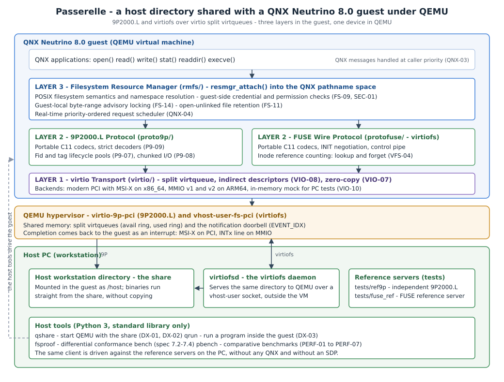

Use
Passerelle — Detailed Architecture & Technical Design
This document details the internal design of <strong>Passerelle</strong>, a high-performance host-guest shared filesystem driver for <strong>QNX® Neutrino® 8.0</strong> under QEMU. It covers the three-layer architectural model, the lifecycle of an I/O request, the resolution of delicate kernel and protocol challenges, and the source file mapping across the repository.

<strong>Reading the picture.</strong> The one thing to keep in mind is that the guest and the host never talk to each other directly: they talk through layers. Inside the QNX guest, an application's read() becomes an IPC message handled by the resource manager (rmfs/), which speaks one of the two wire protocols (proto9p/ for 9P2000.L, protofuse/ for virtiofs); both hand raw buffers to the virtio transport (virtio/), which is the only layer that knows about PCI, MMIO, MSI-X and virtqueues. QEMU is a single band underneath — virtio-9p-pci or vhost-user-fs-pci — and the host side is a single directory, served either by QEMU itself or by virtiofsd. Everything drawn to the side of the guest — qshare, qrun, fsproof, pbench, and the reference servers of tests/ref9p and tests/fuse_ref — is host tooling that drives the <em>same</em> client, which is why the stack can be exercised on the PC with no QNX and no SDP. The ASCII diagram in §1 is the same picture in text.
1. Architectural Overview: Three Layers
Passerelle decouples the guest operating system interface, the wire protocol, and the underlying hypervisor transport into three strict layers:
QNX Applications: open(), read(), write(), stat(), readdir(), execve()...
│ QNX Neutrino IPC Messages handled at caller priority (QNX-03)
┌──────▼────────────────────────────────────────────────────────┐
│ LAYER 3 — Filesystem Resource Manager (`rmfs/`) │
│ - POSIX filesystem semantics & namespace resolution │
│ - Guest-side credential & permission checks (FS-09, SEC-01) │
│ - Guest-local byte-range advisory locking (FS-14) │
│ - Open-unlinked file retention (FS-11) │
│ - Real-time priority-ordered request scheduler (QNX-04) │
├──────────────────────────────┬────────────────────────────────┤
│ LAYER 2 — 9P2000.L Protocol │ LAYER 2 — FUSE Wire Protocol │
│ (`proto9p/`) │ (`protofuse/` - virtiofs) │
│ - Portable C11 codecs │ - Portable C11 codecs │
│ - Bidirectional Linux/QNX │ - Inode reference counting │
│ errno and flag tables │ table (lookup / forget) │
│ - Fid/Tag lifecycle pools │ - High-priority control pipe │
├──────────────────────────────┴────────────────────────────────┤
│ LAYER 1 — virtio Transport (`virtio/`) │
│ - Split virtqueue management & indirect descriptors (VIO-08)│
│ - Zero-copy scatter-gather lists (VIO-07) │
│ - Notification suppression via `EVENT_IDX` │
│ - Hardware backends: │
│ * Modern PCI on x86_64 (`libpci` + MSI-X, VIO-01..VIO-04) │
│ * MMIO v1 and v2 on ARM64 (VIO-03) │
│ * In-memory mock transport for host PC testing (VIO-10) │
└──────┬────────────────────────────────────────────────────────┘
│
QEMU Hypervisor: `virtio-9p-pci` / `vhost-user-fs-pci`
│
Host Workstation Filesystem (`/path/to/share`)Layer 1: Virtio Transport (virtio/)
- **Role**: Discovers the hardware device, negotiates virtio feature bits with QEMU, configures split virtqueues, places descriptor chains in shared memory, kicks the host notification doorbells, and processes completion interrupts.
- **Independence**: Does not know anything about 9P or FUSE. It operates purely on raw scatter-gather buffers (`pgw_vio_sg`).
- **Portability**: All core virtqueue logic (`pgw_virtq`) compiles on host Linux and QNX Neutrino alike. When running on Linux hosts, an in-memory mock transport (`pgw_vio_mock_open`) emulates hypervisor device rings.
Layer 2: Wire Protocols (proto9p/ & protofuse/)
- **Role**: Encodes and decodes the wire message formats.
- **Portability**: Pure ISO C11 with zero OS dependencies. Operates strictly over `pgw_buf` (safe memory-bounded reader/writer cursors).
- **Security & Integrity (P9-09, ROB-06)**: Never casts C structs onto raw network buffers. Every packet header, payload size, string length, and array count is validated before dereferencing.
Layer 3: Filesystem Resource Manager (rmfs/)
- **Role**: Binds into the QNX pathname space (`resmgr_attach()`) and dispatches POSIX filesystem messages (`_IO_CONNECT`, `_IO_READ`, `_IO_WRITE`, `_IO_STAT`, `_IO_DEVCTL`).
- **VFS Interface**: Translates QNX I/O messages into protocol-neutral VFS operations (`pgw_fs_backend_ops`). Whether backed by 9P2000.L or FUSE (virtiofs), the top-level POSIX behavior is identical.
2. Request Lifecycle (Section 5.2 Walkthrough)
To illustrate how Passerelle maintains responsiveness without blocking driver worker threads:
[Caller Thread] [RMFS Worker] [Virtio Queue] [QEMU / Host]
│ │ │ │
1. │─── read(fd, buf, 4096) ───>│ │ │
│ (MsgSendv) │ │ │
2. │ │ (inherits prio) │ │
│ │ builds TREAD request │ │
3. │ │───────────────────────>│ │
│ │ vq_push(sg) + vq_kick │──────────────────────>│
4. │ │ │ │ reads from host
│ (blocked in MsgSendv) │ yields worker thread │ │ filesystem
│ │ (handles other ops) │ │
5. │ │ │<──────────────────────│
│ │ │ writes RREAD to ring │
6. │ │<─── MSI-X / IRQ ───────│ │
│ │ (IST wakes) │ │
7. │<── MsgReplyv(4096 bytes) ──│ │ │- **POSIX Invocation**: An application thread calls `read(fd, buf, 4096)`. The QNX C library marshals an `_IO_READ` message and issues `MsgSendv()` to the driver's channel.
- **Priority-Inherited Reception**: A thread from the driver's thread pool receives the message via `MsgReceivev()`. Under Neutrino microkernel rules, the worker thread automatically inherits the client's scheduling priority (QNX-03).
- **Queue Submission**: The worker serializes a `Tread` request into a pre-allocated buffer cursor, submits the scatter-gather chain into the virtqueue, and kicks the device doorbell via MMIO/PCI write.
- **Non-Blocking Worker Yield (QNX-05)**: Instead of busy-waiting or sleeping inside the worker thread, the worker disassociates from the active request context, leaving the client blocked in `MsgSendv()`. The worker immediately returns to the dispatch loop to process requests from other clients.
- **Host Execution**: QEMU's v9fs worker thread or `virtiofsd` executes the read on the host PC filesystem and writes the completion response into the virtio used ring.
- **Interrupt Service Thread (IST)**: QEMU raises an interrupt (MSI-X on PCI or level line on MMIO). An `InterruptAttachThread()` handler wakes up, consumes the completed descriptor from the used ring, and matches the transaction via its unique tag (9P) or unique request ID (FUSE).
- **Client Unblocking**: The IST replies to the client using `MsgReplyv()`, placing data directly into caller memory and unblocking the caller thread.
3. Tricky Technical Challenges & Mitigations (Section 5.3)
3.1 Linux Numeric Translation (P9-04)
- **Challenge**: The 9P2000.L and FUSE wire protocols specify numeric errno codes, file type bits, and open flags defined by Linux. QNX Neutrino defines different numeric values for errors above 34 (e.g. `ENOSYS` is 38 on Linux, 89 on QNX; `ETXTBSY` is 26 on Linux, 63 on QNX). Open flags also differ (e.g. `O_SYNC`, `O_NONBLOCK`).
- **Mitigation**: Passerelle defines an internal, architecture-independent error enumeration `pgw_err` in `common/include/pgw/err.h`. Bidirectional lookup tables map `pgw_err` to/from Linux wire values (`pgw_linux_errno()`, `pgw_code_from_linux()`) and to/from host/QNX system values (`pgw_host_errno()`). Every single numeric mapping is pinned by exhaustive unit tests.
3.2 Symbolic Links by Redirection
- **Challenge**: In traditional POSIX environments, a filesystem driver resolves symlinks transparently. In QNX Neutrino, path resolution is distributed across resource managers. When resolving a symlink, the driver must NOT follow the link itself; it must inform `procnto` so the kernel path resolution engine restarts from the root namespace.
- **Mitigation** *(design; **to be validated** by a dedicated test — see spec 5.3 and [verification-status.md](verification-status.md))*: in Layer 3 (`rmfs`), when `lookup()` or `open()` encounters a symlink, the driver returns a redirect response so that `procnto` restarts path resolution with the link target (the exact QNX connect-message mechanism is confirmed during feasibility test E3). For explicit `readlink()` calls, the symlink target is returned directly via `pgw_p9_readlink` / `pgw_fuse_readlink`. Recursion loop detection is enforced up to `PGW_SYMLINK_MAX` (40 hops, FS-08).
3.3 Binary Execution from Share (FS-06)
- **Challenge**: To execute a binary located on the share (`/host/bin/program`), the QNX ELF program loader issues memory mapping requests (`mmap(PROT_EXEC)`). The resource manager must support offset reads, header inspection, and descriptor lifecycle tracking.
- **Mitigation**: `rmfs` fully implements `_IO_READ` with arbitrary byte offsets and sizes up to file boundaries. Code pages are loaded directly by `procnto`. Writable shared mappings (`MAP_SHARED` with write) are cleanly rejected with `ENODEV` (documented in spec 4.2), while read-only executable mappings succeed seamlessly.
3.4 QNX 8.0 Interrupt Architecture (InterruptAttachThread)
- **Challenge**: QNX 8.0 deprecated and removed the legacy `InterruptAttach()` API (which ran user ISR code in kernel context). Drivers must now use `InterruptAttachThread()` or `InterruptAttachEvent()`.
- **Mitigation**: Layer 1 spawns a dedicated Interrupt Service Thread (IST) bound via `InterruptAttachThread()`. The thread loops on `InterruptWait()`, unmasks the IRQ, extracts used descriptors from the virtqueue, and dispatches completion callbacks without doing any heap allocation on the interrupt path.
3.5 PCI Modern Discovery & MSI-X (VIO-01..VIO-04)
- **Challenge**: Modern virtio over PCI specifies capabilities located in PCI capability list space (`PCI_CAP_ID_VNDR = 0x09`). Configuring MSI-X vectors requires programming the PCI capability registers and unmasking table entries through `libpci`.
- **Mitigation**: The planned PCI backend uses the QNX 8.0 `libpci` API (`pci_device_attach`, `pci_device_read_cap`). It detects `common_cfg`, `notify_cfg`, `isr_cfg`, and `device_cfg` BAR offsets. For interrupts, it requests MSI-X vectors (`cap_msix_set_nirq`); if MSI-X allocation fails or is disabled by host configuration, it falls back to legacy pin interrupts (`pci_device_read_irq`). This exact sequence is exercised by feasibility test E1 — see [verification-status.md](verification-status.md).
3.6 Tunable Message Size (msize) & Throughput
- **Challenge**: Small message buffers collapse network and filesystem performance due to round-trip latency. Linux guests historically defaulted to 8 KiB, causing poor throughput.
- **Mitigation**: Passerelle negotiates `msize = 131072` (128 KiB) by default during protocol initialization (P9-01, `PGW_MSIZE_DEFAULT`), configurable via mount options up to 4 MiB. Large reads and writes are automatically split across chunk boundaries (P9-08).
3.7 Host Security Models & Least Privilege (SEC-01..SEC-03)
- **Challenge**: QEMU 9P offers `passthrough`, `none`, and `mapped-xattr` security models. `passthrough` requires running QEMU as root on the host workstation.
- **Mitigation**: Passerelle recommends and defaults to `security_model=mapped-xattr` (or `mapped-file`). File permissions and ownership are validated inside the QNX guest by `rmfs` according to the calling process credentials (`pgw_fs_cred`). Mounts default to `nosuid` (SEC-01).
3.8 Inode Number Stability & Collisions
- **Challenge**: If a host share spans multiple physical mounts or filesystems, host inode numbers can collide.
- **Mitigation**: Passerelle recommends configuring QEMU with `multidevs=remap`. Within the guest, Layer 3 tracks 64-bit inode identifiers stably across `Tgetattr` / `getattr` requests.
3.9 Case-Sensitivity on macOS Hosts
- **Challenge**: macOS development workstations frequently run APFS in case-insensitive mode.
- **Mitigation**: Passerelle preserves exact byte strings for all path lookups (FS-15). Case collisions caused by host APFS are documented transparently as host-induced behavior.
4. Source Tree & Component Mapping
Status legend: <strong>[exists]</strong> = present in the repository today; <strong>[planned]</strong> = contract fixed by the public header, implementation landing during the hackathon (file names below are the planned ones).
| Architectural Layer | Repository Path | Status | Key Responsibilities |
|---|---|---|---|
| <strong>Common Infrastructure</strong> | common/ |
<strong>[exists]</strong> — implemented & tested | Safe byte cursors (pgw/buf.h, src/buf_reader.c, src/buf_writer.c), errno/flags/mode translation tables (pgw/err.h, src/err.c, src/flags.c), tunable limits (pgw/limits.h), injectable monotonic clock (pgw/time.h, src/time.c), logging & counters (pgw/log.h, src/log.c), C11 test harness (pgw/test.h, src/test.c) |
| <strong>Layer 1: Transport</strong> | virtio/ |
contract <strong>[exists]</strong> (include/pgw/virtio.h); sources <strong>[planned]</strong> |
Split virtqueue with indirect descriptors & EVENT_IDX, PCI modern backend (QNX libpci, MSI-X with INTx fallback), MMIO v1/v2 backend, in-memory mock backend for PC tests |
| <strong>Layer 2: 9P Protocol</strong> | proto9p/ |
contract <strong>[exists]</strong> (include/pgw/p9.h); sources <strong>[planned]</strong> |
9P2000.L wire encoders/decoders with strict validation (P9-09), fid/tag pools (P9-07), chunked read/write/readdir (P9-08), multi-request session over an abstract RPC callback (P9-05) |
| <strong>Layer 2: FUSE Protocol</strong> | protofuse/ |
contract <strong>[exists]</strong> (include/pgw/fusep.h); sources <strong>[planned]</strong> |
FUSE 7.x wire codecs, INIT negotiation, node reference-count table with FORGET/BATCH_FORGET (VFS-04), hiprio-queue routing for control messages (VFS-02) |
| <strong>Layer 3: Resource Mgr</strong> | rmfs/ |
contract <strong>[exists]</strong> (include/pgw/rmfs.h); sources <strong>[planned]</strong> |
Protocol-neutral VFS over pgw_fs_backend_ops, guest-side credential/permission checks (FS-09, SEC-01), mount options (ro/noexec/nosuid, attr cache TTL), guest-local byte-range locks (FS-14), open-unlinked retention (FS-11), priority-ordered scheduler (QNX-04, PERF-05) |
| <strong>QNX Drivers</strong> | drivers/ |
<strong>[planned]</strong> (empty dir today) | Driver executables wiring rmfs + one protocol + one transport: qnx-fs-9p (9P over PCI/MMIO) and qnx-virtiofs (FUSE over virtio) |
| <strong>Host CLI & Utilities</strong> | host/ |
<strong>[planned]</strong> (empty dir today) | host/qshare/ (one-command QEMU setup, DX-01/DX-02), host/fsproof/ (differential tester + content exerciser), host/bench/ (comparative benchmarks) |
| <strong>Image & Policy</strong> | image/ |
<strong>[planned]</strong> (empty dir today) | mkqnximage snippets embedding the driver and mounting the share at boot (DX-01), QNX security policy (QNX-06) |
| <strong>Upstream Patches</strong> | upstream/ |
<strong>[planned]</strong> (empty dir today) | PCI transport + x86_64 target offered back to gvergine/qnx-fs-9p (Decision D2) |
| <strong>Build Support</strong> | cmake/, tools/ |
<strong>[exists]</strong> | cmake/passerelle.cmake (pgw_library, pgw_test, pgw_qnx_syntax helpers), tools/check-size.py size guard run as the size-guard CTest |